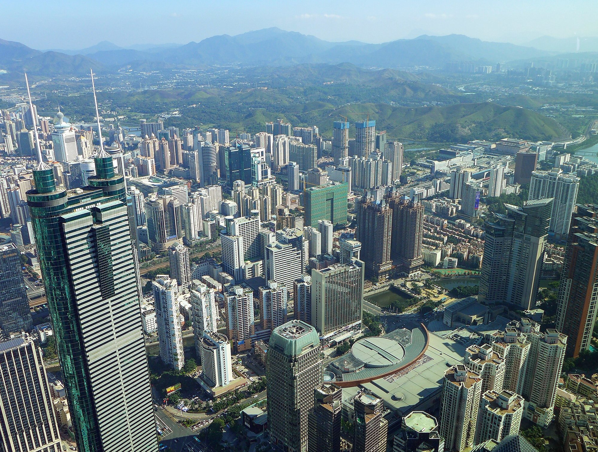
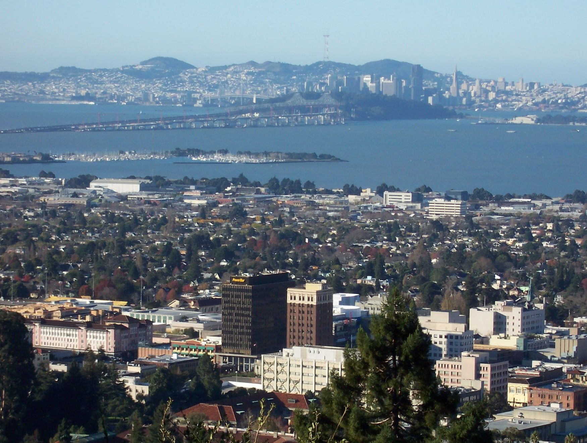

About Me
Education History
Ph.D. Japanese, University of California, Berkeley (2019-Present) B.A. Comparative Literature and Japanese with Highest Distinction in General Scholarship, University of California, Berkeley (2015-2019) Emmanuel College, University of Cambridge (Graduate Summer School in Japanese Early Modern Paleography 2019) Freie Universität Berlin (FUBiS Summer School 2017) Shenzhen Middle School 深圳中學 (Middle school and High school 2009-2015) Curriculum Vitae
Personal History
"Truth is compared in Scripture to a streaming fountain : if her waters flow not in a perpetual progression, they sink into the muddy pool of conformity and tradition."—John Milton, Areopagitica
My experience of education has been shaped, in ways that I have not always been aware of, by my family’s view of education as a tool to destroy barriers imposed by society and history. For my maternal grandfather, education represented what he was supposed to be; for my paternal grandfather, education linked him to what he was not. My maternal grandfather was the youngest son of an aristocratic family whose ancestors had served the imperial court during the Qing Dynasty. This identity caused him immense suffering during Mao’s reign, although, ironically, he never enjoyed the privileges that he was accused of having. During the 1930s, shortly before he was born, his well-educated father and uncles abandoned their homes and joined the Communist and the Nationalist Parties respectively, in order to “save” China. When he was only an infant, his elder brother, who was to become a famous prodigy proficient in both Chinese and Western studies, gave up his botchan life and joined the first platoon he met after escaping from home, in order to seek revenge for his best friend, a peasant boy who had been killed in an air raid by the Japanese. The platoon happened to belong to the Communist Party. Wars marked my grandfather’s childhood, but when peace finally came, a group of Communist soldiers and villagers seized all the family lands and property and killed the elder members of the house for “exploiting the farmers.” He and his mother escaped, and planned to meet his uncle who had become one of Chiang Kai-shek’s top officials in Nanjing. But they missed each other, and he and his mother became beggars. My grandfather married my grandmother and had three daughters, and he often bullied them. “Didn’t you hate him?” I asked my mother whenever she told me about her childhood. “Yes, but he was a poor man. He was born as an aristocrat yet he never was one, and he was punished for this identity throughout his life. He envied his elder brother, who wrote letters to us in beautiful calligraphy and elegant classical prose. Your grandfather had to teach himself reading and writing, and he secretly stored the Four Classic Novels in his room and even bought himself a violin when he was fifty.” When my mother was young, my grandfather’s elder brother visited their family and blamed my grandfather for bullying his daughters and wife. My grandfather would shout, ‘I don’t know why I did it! Maybe it was the only way for me to feel as if I had some power. Unlike you, I don’t have any sons, any titles, any accomplishments. How can I face our ancestors after I die?’” My mother has told me that it is unfortunate that my grandfather died when I was only six. “He would be really pleased if he could see you sharing his passions.” My paternal grandfather had a very different story. He was the son of the poorest fisherman in the poorest fishing town in Southern China. His father also left home when he was still a child, and was purchased as cheap labor and shipped to Southeast Asia. Later, even though his mother and sister could hardly manage their lives, he refused to sacrifice his life by becoming a fisherman in order to send them money. Instead, he was determined to go to college. To him, education, a seemingly impossible dream for villagers, was the only way to change his fate, to avoid dying in a storm or being sold as a slave. He became the first college student from that area, and later an engineer. As a result, both my maternal and paternal families value my education more than anything else. One perceived it as a privilege to which they had been entitled for hundreds of years, a privilege lost and finally found; the other perceived it as a privilege they had eventually gained after hundreds of years of longing.
What does education mean to me, as I did not face the barriers they once faced? Before I started college, I felt that my grandfathers were confined inside a wall, while I was outside that wall, and I imagined a future without any limitations. However, I recognized my own limitations when I came to UC Berkeley. The most important example of this concerns homosexuality, which has become a crucial part of my academic interest. I grew up being told that women and men should marry, and that LGBTQ people are abnormal, and I indeed felt it odd when some states in America legalized gay marriage. Such uneasiness soon disappeared when I saw gay couples walking along Berkeley’s streets hand-in-hand—why should I feel uneasy in the face of their happiness? But the real shock came when I did research on homosexuality in premodern Japan and realized that the very division of heterosexuality and homosexuality in Japan was largely a modern invention. Arguments against gay marriage that I have heard of (and I have used, shamefully), were mainly about this practice going against the principles of Nature and Divinity, yet they are in fact artificial, created and used under certain circumstances to further certain political and social ends. Lacking this piece of knowledge about Japan, I was not only confined by a barrier but had also imposed barriers impeding other people’s pursuit of happiness. I realized that my upbringing had generated my own set of prejudices. My maternal family’s misery made me lament for aristocrats who sacrificed their lives for the country yet gained nothing in return; my paternal grandfather’s success made me despise those who desire a good education yet “never work hard.” Such reflections have taught me that in any given era, class, nation, and ideology, we have limitations imposed on our thinking, but we can always overcome these limitations by making conscious efforts. Once I became aware of my own prejudices, I was overwhelmed by guilt because of my unconscious hypocrisy. I considered myself a fair person, but I took underprivileged people’s sufferings for granted, thus contributing to their misery and reinforcing socio-historical injustice. To shatter my limitations and to recast myself has become an ethical passion for me. I want to pursue a graduate education in the humanities to cultivate critical thinking and sharpen the analytical tools needed to further explore my own limitations, as well as the limitations humanity has faced. This process can be painful—it involves fundamentally undoing the worldview that has shaped me. But I consider it indispensable, both for myself and for the society. Scholars’ arguments are more than dead words: they have the power to demolish the barriers formed by our old perceptions (take my exposure to sexuality in early modern Japan as an example), as well as to construct new barriers that in turn will need to be challenged by new arguments. I am female, Asian, and an international student (which some might consider disadvantages), but I am privileged enough to have the chance to save myself from my past prejudices: to study, to question, to write, and to teach. Yet even these pursuits themselves, I know, have the potential to become new barriers. So I have to keep breaking through my limitations by gaining new knowledge. Pursuing graduate education is about knowing and contributing, about destroying and creating. It is my confession and repentance. As John Milton says in “Areopagitica,” “ Truth is compared in Scripture to a streaming fountain; if her waters flow not in a perpetual progression, they sicken into a muddy pool of conformity and tradition.” I hope that my progress will never cease.
(December 2018)